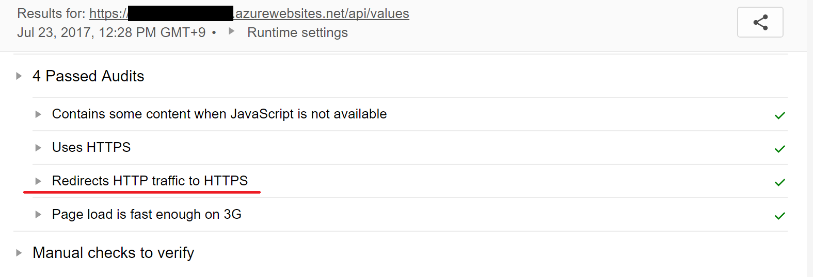

ASP.NET Coreで常にHTTPSにリダイレクトする
従来のASP.NETではweb.configをたくさんいじってあれこれ設定していましたが、ASP.NET CoreからはほとんどをStartup.csに記述するようなりました。
個人的にもそのほうがコンパイルエラーで設定ミスとかが分かるのでこっちのほうが好きですね。
環境
- .net core 1.1
HTTPSにリダイレクトする
Rewriteのインストール
HTTPでアクセスしたときにHTTPSへリダイレクトするのもStartup.csで設定するようになりました。
まずはNugetからリダイレクトするライブラリをインストールします。
NugetでMicrosoft.AspNetCore.Rewriteを検索してインストールします。あるいはcsprojに直接書いてもOKです。
<ItemGroup>
<PackageReference Include="Microsoft.AspNetCore.Rewrite" Version="1.0.2" />
</ItemGroup>
csprojに直接書いた場合はdotnet restoreコマンドを忘れずに実行しましょう。
リダイレクト設定
Startup.csで編集する箇所は2か所です。
public void ConfigureServices(IServiceCollection services)
{
// Add framework services.
services.AddMvc();
services.Configure<MvcOptions>(options =>
{
options.Filters.Add(new RequireHttpsAttribute());
});
}
public void Configure(IApplicationBuilder app, IHostingEnvironment env, ILoggerFactory loggerFactory)
{
loggerFactory.AddConsole(Configuration.GetSection("Logging"));
loggerFactory.AddDebug();
app.UseRewriter(new RewriteOptions().AddRedirectToHttps());
app.UseMvc();
}
上ではASP.NET Core全体にHTTPSを必須とする属性を追加します。
下ではHTTPでアクセスしたときにHTTPSでリダイレクトするように設定をしています。
Azure App ServicesではHTTPも受け付けますが、これでAzureにアップロードするとHTTPでアクセス時にHTTPSにリダイレクトされるようになります。
Googleのチェックツールを使うとHTTPからHTTPSにリダイレクトできていることが検証できます。

プロダクション時だけONにする
Startup.csでは現在がどのモードで動作しているかが取得できるので、Production時だけの処理を簡単に書けます。
if (env.IsProduction())
{
app.UseRewriter(new RewriteOptions().AddRedirectToHttps());
}
またはappsettings.jsonの値を見るようにしても良いと思います。